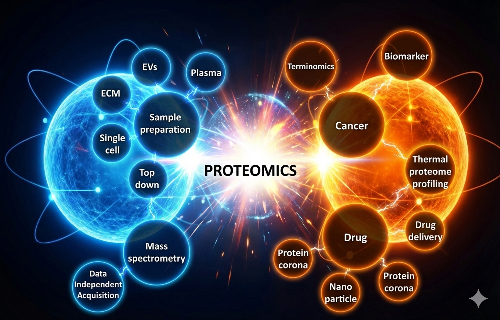

DIAMS Acquisition
TermiomicsProteolytic Data
CancerApplication
Pharmaceutics
DIAMS Acquisition
TermiomicsProteolytic Data
Cancer
Pharmaceutics
RESEARCH: DIA
← Back to Console
RESEARCH: Terminomics
← Back to Console
RESEARCH: Cancer
← Back to Console
MASTER'S PROJECT: Pharmaceutics
Development of Amisulpride Orally Disintegrating Tablets
ABOUT ME
// EDUCATION
2022 – 2026
2018 – 2021

// Research Intrests Overview
PUBLICATIONS
Evaluation of the False Discovery Rate in Library-Free Search by DIA-NN Using In Vitro Human Proteome
Journal of Proteome Research (2025)
, Masanaga Kenko, Koji Ogawa, Naoki Goshima, Takeshi Masuda, Shingo Ito, Sumio Ohtsuki*.
// Impact: This study establishes a rigorous DIA FDR evaluation method by synthesizing recombinant proteins, providing a benchmark dataset for software optimization.
Improving Proteomic Identification Using Narrow Isolation Windows with Zeno SWATH Data-Independent Acquisition
Journal of Proteome Research (2024)
, Haruka Kumabe, Takumi Yamamoto, Naoto Tashiro, Takeshi Masuda, Shingo Ito, Sumio Ohtsuki*.
// Impact: The study developed an optimized narrow windows DIA that substantially boosts proteomic coverage and sensitivity (with a 40% improvement at low loading amounts) without compromising quantitative robustness.
OTHERS
CONTACT
PERSONAL DASHBOARD
...Total Visits
...Unique Visitors